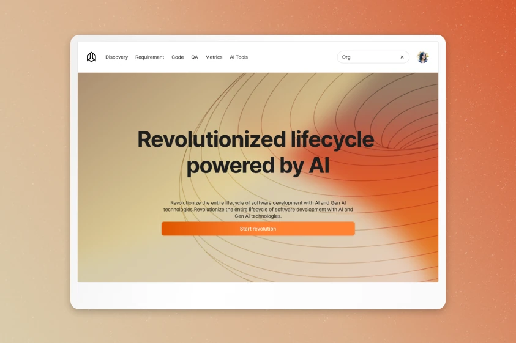
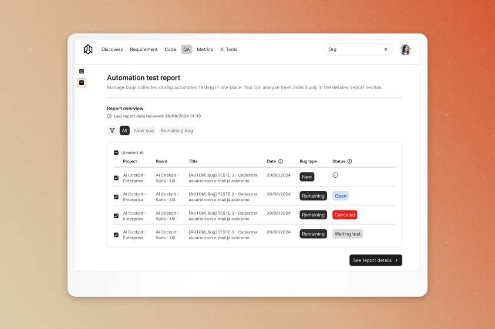
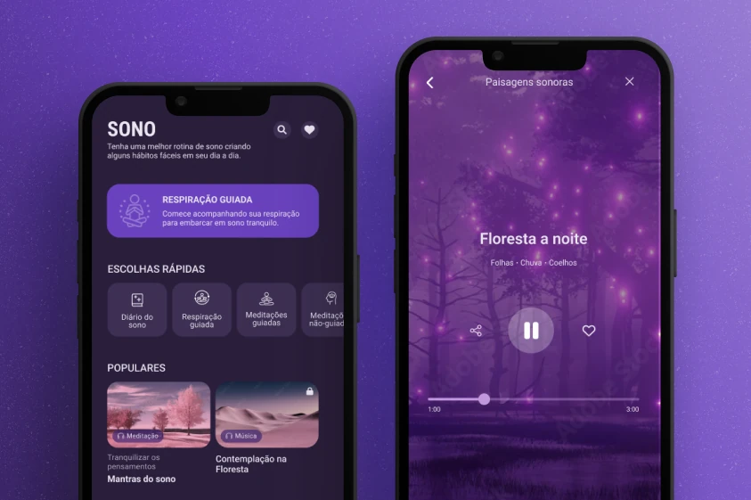
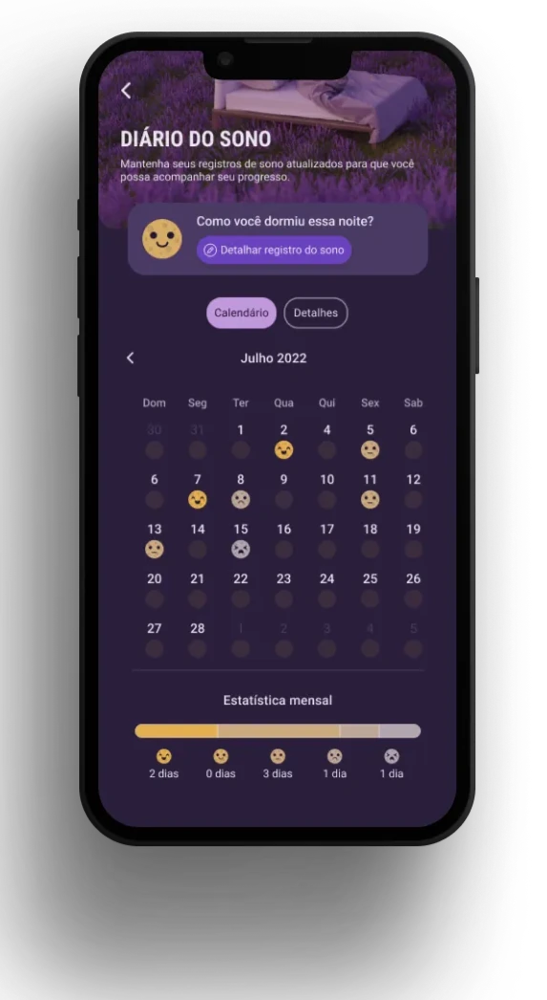
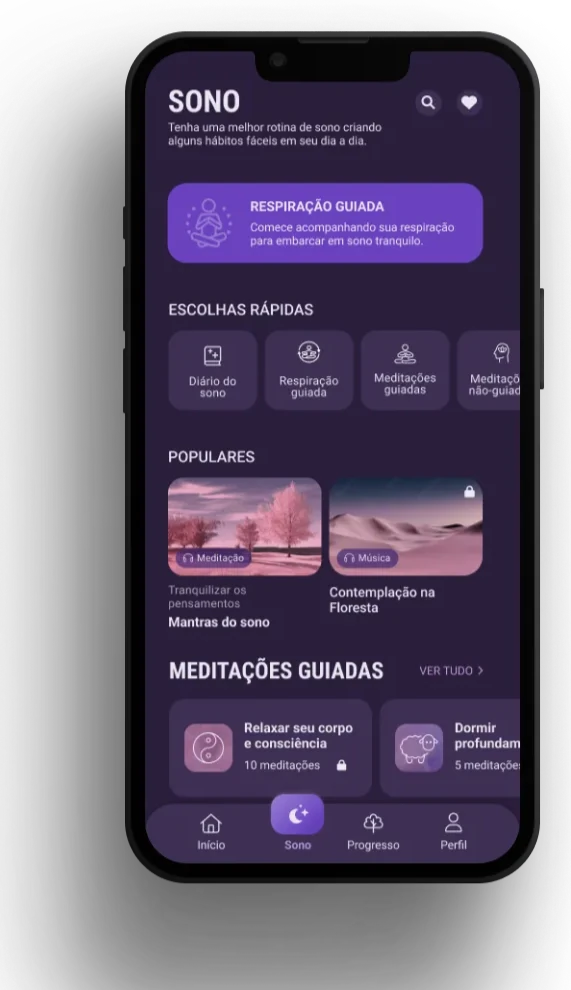

Product managers
Writing clear stories quickly was difficult, and existing templates were frequently reused.
Design direction: AI assistance for drafting epics and user stories from a starting input.
Curious about people.
Drawn to complex problems.
I turn what I learn from people into thoughtful digital experiences. From UX research to prototyping, I connect the questions we ask with the things we build.
Especially interested in products for developers and the people behind the code.
Explore my work01 / A few things I’ve worked on
Different contexts. The same curiosity about how people think, work and feel.

Desktop · AI & developer workflowsMaking complex development workflows easier to navigate.
I led end-to-end design for an AI-powered platform supporting planning, development and QA, learning alongside the technical teams who would use it.
Explore the caseClose the caseAI Cockpit / The full story
Product managers, developers, tech leads and QA engineers each bring a different vocabulary and workflow. The challenge was to connect them without treating their needs as interchangeable.
Final product screens are confidential. The visuals in this case were recreated to illustrate the design process.
The starting point
Planning, building and testing often happen in disconnected tools. This project explored how a shared platform and AI assistance could support recurring tasks such as writing user stories, organizing technical subtasks and interpreting test reports.
My role
I joined at the concept stage and led design across research, ideation, interface design and early usability testing. I collaborated with stakeholders and cross-functional teams to shape flows for different roles.
I developed the English version first, then localized the product into Brazilian Portuguese, adapting terminology to the vocabulary of each user group.
Research into decisions
Research continued throughout the project, often through informal interviews with internal users because of time and resource constraints. Three recurring needs helped guide the design:
Writing clear stories quickly was difficult, and existing templates were frequently reused.
Design direction: AI assistance for drafting epics and user stories from a starting input.
Technical subtasks needed clearer structure, especially when work crossed team boundaries.
Design direction: modular task breakdowns linked to broader epics, with AI code suggestions as a starting point.
People working with test automation needed better visibility into testing progress and results.
Design direction: early dashboard concepts with summarized automated test reports.

Working together
I facilitated ideation sessions using “how might we” questions and quick prototypes. These sessions helped the team explore story generation, technical task breakdowns and how to surface test reports before committing to development.
I also helped design and test a platform-wide AI chatbot, and used early usability testing to evaluate language and tone of voice.
What I took forward
As the only dedicated UX researcher, I learned to adapt research to short timelines while keeping useful questions at the center. Backend and architectural constraints shaped what was feasible.
The lasting lesson was how much better design decisions become when I understand the different ways technical teams approach a problem.
Contribution & outcomes
I helped shape the product’s flows, language and structure from the ground up, using qualitative research and co-creation to support decisions across roles. This case documents design contributions and learnings; measured changes in adoption or efficiency are not available.

Mobile · Sleep & wellbeingA thoughtful space for better sleep routines.
Research, visual direction and prototyping for a sleep health feature in a meditation app, including the design system’s adaptation to dark mode.
Explore the caseClose the caseAtma / The full story
A sleep health tracking feature needed to feel at home in an existing meditation app, while supporting useful journeys and a coherent dark mode experience.
The design challenge
The project combined a new sleep health feature with the product’s move toward dark mode. My work spanned early visual concepts, user flow mapping, wireframes, high-fidelity prototypes, validation and handoff.
I led the feature’s creative direction and worked with the product team to map journeys and adapt the design system while preserving consistency across screens and components.
Research approach
I used an online survey to gather broader feedback and understand patterns in expectations and behavior. I also moderated usability sessions on Google Meet with a clickable Figma prototype.
I synthesized both research activities into a report to inform design improvements and support product decisions. Direct observation revealed usability issues that internal reviews had missed.

Scope of the design work
8+
user journeys prototyped
~180
high-fidelity screens
Alongside a research report and design system guidance for dark mode.
Design deliverables, rather than usage or business metrics.
What I took forward
Adapting a design system means thinking through contrast, accessibility and a range of use cases. Combining survey feedback with observed behavior gave us a stronger basis for iteration than internal review alone.
02 / The person behind the work
I’m Ana, a Brazilian product designer with a background in graphic design and a curiosity that keeps growing.
I began my UX career as a researcher in 2021. Since then, my work has brought together research, interaction design, UX writing and visual expression, from early discovery to high-fidelity prototypes.
I learn by listening closely and asking questions that open up useful conversations. Working with technical teams has drawn me toward developer experience: understanding the people, tools and decisions behind software.
My artistic side lives alongside that curiosity. I care about how an experience feels as much as how it works.
At Compass UOL, I also contributed research, information architecture and prototyping to a Visual Studio Code plugin.
03 / Let’s start a conversation
I’m interested in product design opportunities, especially with teams building tools for developers. If my work resonates with yours, I’d love to talk.
analuizamuenz@gmail.com